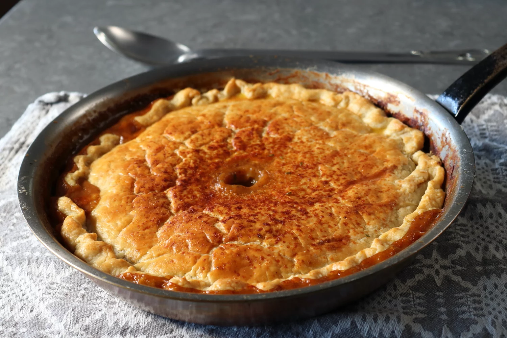

Chicken Pan Pie

Description
Making chicken pot pie in a pan doesn't sound all that revolutionary, and it's not, since that's where many people make it anyway, but since it comes out so differently than deeper dish versions, and according to me, so much better, I decided we need to start calling it what it really is. Chicken pan pie. Which I think has a nice ring to it.
By using a shallow frying pan to construct our pie, we're not only getting a higher crust to filling ratio, but the moisture inside tends to reduce, resulting in a more intense, more flavorful, and much thicker filling. Some might say the filling gets "drier," but I don't like that word, since nothing about this is even remotely dry.
This more substantial stuffing also fuses to the crust, resulting in what are really two distinct textures – the gravy-soaked, dumpling-like layer that's fused to the filling, and the crispy top surface. Speaking of carbs, I didn't add potatoes to the mix. If I'm making the deeper, saucier, traditional version, I'll usually include them, but here, I don't think they're needed. Of course, you add whatever you're into, but no matter what that is, I really do hope you give this pie a try soon. Enjoy!
Ingredients
- 1/4 cup unsalted butter
- 2/3 cup diced onion
- 1/2 teaspoon kosher salt
- 1 1/2 pounds boneless, skinless chicken thighs, cut into 1-inch pieces
- 1/4 cup all-purpose flour
- 2 1/2 cups chicken broth
- 1/2 cup sliced carrots
- 1/2 cup sliced celery
- 1/4 teaspoon freshly ground black pepper
- 1 pinch cayenne pepper
- 1/2 cup frozen peas, thawed
- 1 teaspoon fresh thyme leaves
- 1 recipe pastry pie dough
- 1 large egg, beaten
- 2 teaspoons water
Directions
- Preheat the oven to 425 degrees F (220 degrees C).
- Melt butter in a 12-inch cast iron skillet over medium-high heat. Add diced onion and salt. Cook, stirring, until onions start to soften, and the edges begin to brown, 3 to 4 minutes. Add chicken, and cook, stirring, until the chicken loses its pink color, and starts to brown in spots, 3 to 4 minutes.
- Sprinkle flour over top, then cook and stir for about 2 minutes. Pour in the broth and bring to a simmer, scraping the bottom of the pan with a spatula. Stir in carrots, celery, black pepper, and cayenne.
- Cook the mixture, stirring occasionally, until it's as thick as you want, 5 to 10 minutes. For a thick, sticky filling once baked, reduce until the sauce coats the back of a spoon. For a saucier filling, don't reduce the mixture at all.
- Turn off the heat and stir in the peas and thyme. Taste for seasoning and reserve until needed.
- Roll out pie or pastry dough to form a circle about 14 inches in diameter.
- Fold over 1/2 inch of dough all the way around, and then crimp the edge to make a decorative scalloped design. Cut or punch out a 1-inch hole in the center of the dough.
- Place the pan on top of a sheet pan in case filling bubbles over in the oven. Carefully place the dough over the filling, and adjust until it's centered. Press the crust lightly into the filling. Brush the top with an egg wash if desired.
- Bake in the preheated oven until crust is browned and filling is bubbling, about 40 minutes. Let rest for 5 minutes before serving.